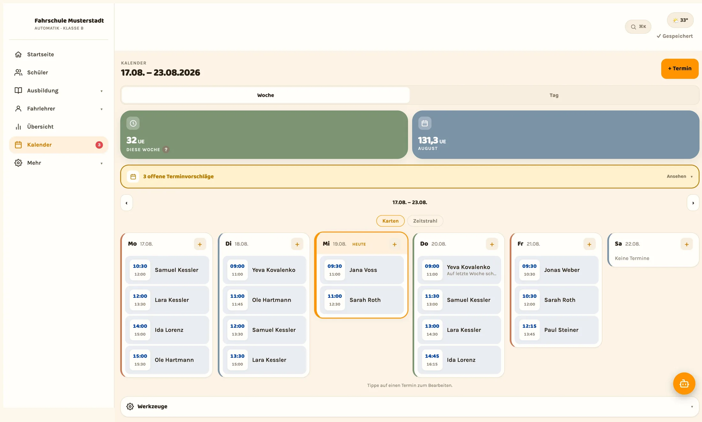
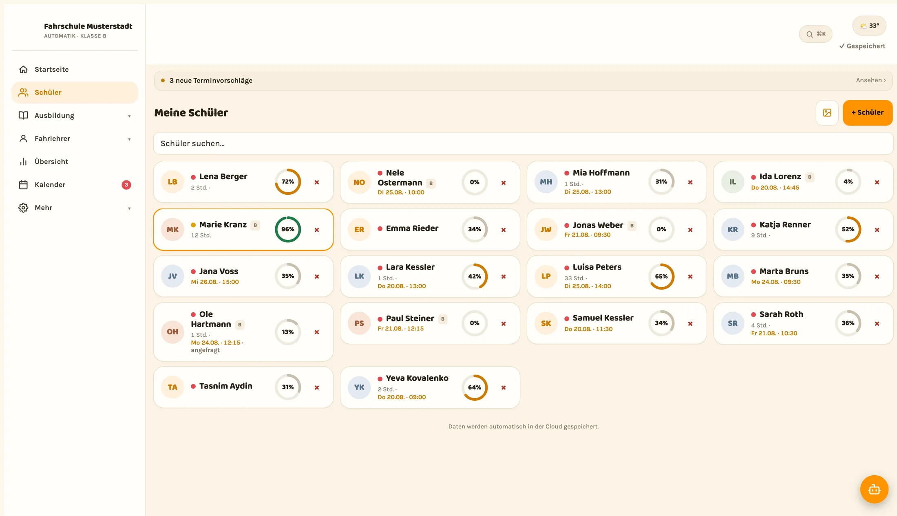

Die Fahrschulverwaltungssoftware, Funktion für Funktion.
Von der digitalen ADK über den Kalender bis zum Fuhrpark. Alles, was hier steht, gibt es in der laufenden App. Nichts davon ist geplant, angekündigt oder in Arbeit.
Allindrive ist im Beta-Betrieb. Zugänge vergeben wir persönlich.
Zehn Bereiche.
Jeder Bereich steht weiter unten ausführlich. Wer etwas Bestimmtes sucht, springt direkt hin.
Ausbildung dokumentieren, während sie stattfindet.
Ausbildungsdiagrammkarte, Strecken und Nachweis stehen am Fahrschüler und nicht im Handschuhfach. Erfasst wird nach dem Aussteigen, nicht abends am Schreibtisch.
-
Digitale ADK je Fahrschüler
Abschnitte, Übungen, Anzahl der Wiederholungen, Bewertung und Datum. Aufgeklappt wird nur der Abschnitt, der gerade dran ist.
-
Eigene Vorlagen je Führerscheinklasse
ADK-Vorlagen und Streckenvorlagen legst du selbst an, samt Sonderfahrten-Soll für Überlandfahrt, Autobahnfahrt und Fahrt bei Dunkelheit.
-
Streckenkatalog
Die Strecken deiner Fahrschule an einer Stelle, beschrieben und den Übungen zugeordnet. Auch die Vertretung findet sie.
-
GPS-Aufzeichnung der Fahrstrecke
Die Fahrt wird live mitgeschrieben. Schwierige Stellen bekommen einen Pin auf der Karte, damit sie beim nächsten Mal dran sind.
-
Alle Strecken eines Schülers auf einer Karte
Wo war er schon, welche Ecke der Stadt fehlt noch. Eine Karte statt zehn Erinnerungen.
-
Sonderfahrten und Begleitfahrten
Ein Zähler je Art der Sonderfahrt gegen das eingestellte Soll. Begleitfahrten nach BF17 lassen sich getrennt auswerten.
-
Fahrstunden-Tagebuch und Leistungserfassung
Jede Unterrichtseinheit mit Inhalt und Bewertung, chronologisch am Schüler. Unterschrieben wird digital auf dem Gerät.
-
Ausbildungsnachweis als PDF
Fertig gesetzt, mit allen erfassten Übungen und Sonderfahrten. Zum Weitergeben oder Ausdrucken.

Aufnahme aus der laufenden App. Die Namen darin sind erfunden, die Oberfläche ist es nicht.
Der Kalender kennt Fahrlehrer, Fahrschüler und Fahrzeug.
Tages- und Wochenansicht, 22 Terminarten mit eigenem Farbcode, Serien für wiederkehrende Stunden. Passt etwas nicht zusammen oder ist das Ausbildungslimit erreicht, sagt der Kalender es vor dem Speichern und nicht hinterher.
- Fahrzeugkalender für Autos, die sich mehrere Fahrlehrer teilen
- Arbeitszeiten und Ausbildungslimit gelten als Grenze für jede Buchung
- Urlaub und sonstige Tätigkeiten blockieren den Tag, ohne Umweg
-
Tages- und Wochenkalender
Die Woche in Tagesspalten, der Tag in Stunden. 22 Terminarten, jede mit eigener Farbe, von der Fahrstunde bis zur Prüfung.
-
Terminserien
Wiederkehrende Stunden einmal anlegen, statt sie jede Woche neu einzutragen.
-
Fahrzeugkalender
Welches Auto wann bei wem steht. Geteilte Fahrzeuge greifen direkt in die Planung ein.
-
Überschneidungs- und Limitwarnung
Doppelbuchung, überschrittene Arbeitszeit oder erreichtes Ausbildungslimit: Der Hinweis kommt, bevor der Termin steht.
-
Buchungslink und QR-Code
Fahrschüler sehen freie Zeiten und fragen selbst an. Der Link gehört deiner Fahrschule, den QR-Code kannst du aushängen.
-
Anfragen bestätigen oder verschieben
Bestätigen, ablehnen oder einen Gegenvorschlag senden. Alles aus derselben Ansicht.
-
Stornoanfragen
Sagt ein Fahrschüler ab, landet die Anfrage bei dir und nicht auf dem Anrufbeantworter.
-
Warteliste
Wird eine Stunde frei, bekommen passende Schüler sie angeboten. Die Lücke bleibt nicht leer.
-
Terminvorschläge senden
Du schlägst Zeiten vor, der Fahrschüler wählt aus. Bestätigungen gehen auf Wunsch per WhatsApp raus.
-
Kalender-Abo
Deine Termine schreibgeschützt in Apple Kalender, Google Kalender und Outlook, über ICS oder webcal.
Vor der Prüfung wissen, wo es noch klemmt.
Die praktische Prüfung einmal durchspielen, die Fehler mitschreiben und sehen, was sich wiederholt. Danach steht die Einschätzung auf Beobachtungen statt auf Bauchgefühl.
-
Prüfungssimulation mit Live-Timer
Der Ablauf der praktischen Prüfung, mitgeschrieben während der Fahrt. Der Timer läuft mit, damit die Dauer stimmt.
-
KI-Schnelleintrag in der Simulation
Kurz sprechen statt tippen, während der Schüler fährt. Der Eintrag wird dir danach zur Bestätigung gezeigt.
-
Wiederkehrend auffällige Fehler
Was über mehrere Simulationen immer wieder auftaucht, steht zusammengefasst am Fahrschüler.
-
Prüfungsreife-Ampel
Aus ADK-Stand, Sonderfahrten und Simulationen entsteht eine Einschätzung. Die Entscheidung bleibt bei dir.
-
Schaltkompetenz-Test B197
Der Test zur Schaltkompetenz dokumentiert, mit den gefahrenen Inhalten, auch als PDF.
-
Prüfungsversuche dokumentieren
Wann angetreten, in welcher Klasse, mit welchem Ergebnis. Der Verlauf steht am Schüler.
-
Quotenpilot
Erfolgsquoten nach Führerscheinklasse, Zeitraum und Fahrlehrer, gerechnet aus deinen eigenen Daten.
-
Führerscheinantrag als Schrittliste
Welche Unterlagen fehlen noch, wo steht der Antrag. Abgehakt statt im Kopf behalten.
Der KI-Helfer tippt, du bestätigst.
Ein Assistent, der normale Sprache versteht und Fotos auslesen kann. Er nimmt das Abtippen ab, nicht die Entscheidung.
-
Eintragen in normaler Sprache
Der Helfer schwebt über der App und legt Termine, Fahrstunden, ADK-Punkte, Strecken und Schülerdaten an. Ein Satz genügt.
-
ADK-Karte aus dem Foto
Die Papierkarte abfotografieren. Die abgehakten Übungen wandern auf die digitale Karte.
-
Kalender-Screenshot einlesen
Ein Bild aus dem alten Kalender wird zu echten Terminen, mit Datum, Uhrzeit und Schüler.
-
Anmeldung abfotografieren
Stammdaten neuer Fahrschüler aus dem Foto der Anmeldung übernehmen, statt sie abzutippen.
-
Trainingsvorschlag
Aus dem Verlauf der Fahrstunden entsteht ein Vorschlag, was als Nächstes dran sein könnte.
-
Übergabe-Einschätzung
Wechselt ein Fahrschüler den Fahrlehrer, fasst der Helfer den Stand zusammen, auf Wunsch als PDF.
-
Tages-Briefing
Auf der Startseite steht morgens, was heute ansteht und wo etwas offen ist.
-
Buchungsassistent für Fahrschüler
Der Schüler beschreibt, wann er kann. Der Assistent sucht passende freie Zeiten und stellt die Anfrage.
Kein Vorschlag wird still gespeichert. Was erkannt wurde, siehst du vorher und bestätigst es. Alle KI-Funktionen sind hinter dem Login.
Vom Anruf zum angelegten Fahrschüler.
Wer sich meldet, trägt sich selbst ein. Aus dem Interessenten wird ein Schüler, sobald du den Zugang freischaltest.
-
Selbstanmeldung über die App
Interessenten legen ihre Daten selbst an, bevor sie das erste Mal im Büro stehen.
-
Fahrschul-Code
Ein Code deiner Fahrschule verbindet die Fahrschüler-App mit deinem Betrieb. Mehr braucht es nicht.
-
Freischalten per Code und PIN
Du gibst den Fahrschülerbereich frei, wenn es so weit ist. Der Schüler vergibt seinen eigenen PIN.
-
Anmeldung per Foto übernehmen
Papier bleibt möglich. Abgetippt wird es trotzdem nicht, das erledigt der KI-Helfer.
-
Empfehlungsprogramm
Jeder Fahrschüler hat einen eigenen Empfehlungscode für seine Freunde.
-
Zugang für Eltern und Kostenträger
Ein eigener Zahler-Zugang, getrennt vom Zugang des Fahrschülers.

Aufnahme aus der laufenden App. Die Namen darin sind erfunden, die Oberfläche ist es nicht.
Alle Fahrschüler auf einem Bildschirm.
Wer ist wie weit, wer hat morgen einen Termin, wer war lange nicht mehr da. Die Liste beantwortet das ohne einen einzigen Klick, und sie gehört der Fahrschule, nicht dem Gerät.
- Der Fortschrittsring zeigt je Schüler den Ausbildungsstand in Prozent
- Der nächste Termin steht direkt an der Kachel
- Vertretungen sehen denselben Stand und tragen in dieselbe Karte ein
-
Suche und Sortierung
Nach Name, nach Fortschritt oder nach letzter Aktivität. Auch bei dreihundert Kacheln findest du die richtige.
-
Stammdaten je Fahrschüler
Führerscheinklasse, Standort, Sehhilfe, Theoriestatus und Kontaktdaten an einer Stelle statt auf drei Zetteln.
-
Detailansicht in Reitern
ADK, Termine, Fahrstunden, Strecken und Unterlagen getrennt, statt alles in einer langen Seite.
-
Schüler mit Kollegen teilen
Fährt jemand anderes, bekommt er Zugriff auf denselben Schüler. Ohne Weitergabe von Zetteln.
-
Archiv
Bestandene Fahrschüler wandern ins Archiv und lassen sich jederzeit zurückholen.
-
Anrufen und WhatsApp per Wischgeste
Direkt aus der Liste, ohne die Nummer zu suchen. Auch mit einer Hand am Straßenrand.
Deine Fahrschüler haben eine eigene App.
Fortschritt, Termine, Strecken und Lernvideos, dazu ein Profilbild und ein eigener PIN. Deshalb klingelt das Telefon seltener.
-
Nativ und im Browser
Eine eigene App für iOS und Android, dazu die Weboberfläche ohne Installation. Die Fahrlehrer haben ihre eigene App.
-
Wochenkalender mit freien Zeiten
Der Fahrschüler sieht, wann bei dir etwas frei ist, und muss nicht raten.
-
Wunschtermine, Storno und Warteliste
Termine vorschlagen, selbst absagen und sich vormerken lassen, wenn es früher gehen soll.
-
Fortschritt mit Prozentring
Der Stand der ADK, die Sonderfahrten und die Abschnitte, die noch fehlen.
-
Eigene Fahrstunden auf der Karte
Jede Fahrstunde mit der aufgezeichneten Strecke. Das Gespräch danach wird konkreter.
-
Bereich „Üben“ für BF17
Fahrtenbuch für begleitete Übungsfahrten, ein Ausbildungsplan mit 16 Übungen in vier Stufen und die GPS-Aufzeichnung der Fahrt.
-
Lernvideos und Erfolge
Die Videos deiner eigenen Fahrschule, dazu Erfolge für erreichte Abschnitte.
-
KI-Chat und vier Sprachen
„Frag uns“ beantwortet Fragen zur Ausbildung. Bedienbar auf Deutsch, Englisch, Türkisch und Russisch.
Fuhrpark, Standorte und das Team.
Der Teil der Fahrschulverwaltung, an den man erst denkt, wenn eine Frist abgelaufen ist.
-
Fahrzeuge mit Kilometerstand und Kosten
Jedes Auto mit Stand, laufenden Kosten und den Fahrlehrern, die damit fahren.
-
HU-Countdown
Die nächste Hauptuntersuchung steht als Countdown am Fahrzeug, nicht als Zettel an der Pinnwand.
-
Fahrzeugkalender
Jedes Fahrzeug hat seinen eigenen Kalender. Er greift in die Terminplanung ein, damit kein Auto doppelt verplant wird.
-
Standorte und Filialen
Mehrere Standorte mit eigenen Fahrzeugen, Fahrlehrern und Schülern.
-
Führerscheinklassen der Fahrschule
Welche Klassen ihr ausbildet, von B über BF17 und B197 bis B96, samt Sonderfahrten-Soll je Klasse.
-
Ausbildungsfahrt-Arten anpassen
Die Arten der Ausbildungsfahrt lassen sich an eure Bezeichnungen anpassen.
-
Fahrlehrer einladen, Rollen vergeben
Neue Fahrlehrer kommen über einen Einladungscode dazu. Rechte gibt es als Fahrlehrer oder als Fahrschul-Admin.
-
Branding und Personalunterlagen
Name, Untertitel, Logo und Farbe der Fahrschule. Unterlagen je Fahrlehrer liegen am Personalprofil.
Früh gewarnt statt spät gewundert.
Fristen laufen leise ab und Fahrschüler verschwinden langsam. Beides fällt hier auf, solange sich noch etwas machen lässt.
-
Fristen-Radar
Fällige Unterlagen, anstehende Hauptuntersuchung und Aufbewahrungsfristen, sortiert nach Dringlichkeit.
-
Abbruch-Risiko
Wer sich vom Ablauf her gerade verabschiedet, wird markiert, bevor er endgültig weg ist.
-
„Lange nicht gefahren“
Eine Liste der Fahrschüler ohne Fahrstunde in den letzten Wochen. Ein Anruf reicht oft.
-
Erinnerungen für morgen
Alle Fahrschüler von morgen als WhatsApp-Serie, in einem Durchgang statt in zwölf Nachrichten.
-
Tagesabschluss am Abend
Was heute lief, was offen blieb, was morgen ansteht. Eine Ansicht, dann ist Feierabend.
-
Statistik
Ausbildungsstände, Termine und Fahrstunden über die ganze Fahrschule, nicht nur über den eigenen Kalender.
-
Geburtstagshinweis
Kleiner Hinweis am Morgen. Im Auto ist er mehr wert, als er kostet.
-
Push und Home-Screen-Widget
Benachrichtigungen in der nativen App, dazu ein Widget mit den heutigen Terminen auf dem Startbildschirm.
Technik, Zugang und Daten.
Eine Fahrschulverwaltungssoftware, die im Browser läuft, sich als App installieren lässt und die Daten der Fahrschule voneinander trennt.
-
Im Browser, ohne Installation
Rechner, Tablet und Handy. Als PWA lässt sich Allindrive auf den Startbildschirm legen und öffnet wie eine App.
-
Zwei native Apps
Eine für Fahrlehrer, eine für Fahrschüler, jeweils für iOS und Android.
-
Daten in einer EU-Datenbank
Mit Zeilenschutz (Row Level Security): Jede Abfrage sieht nur die Daten der eigenen Fahrschule. Rechenzentrum: Standort ergänzen
-
Automatische Speicherung
Eingetragenes steht sofort. Auch dann, wenn mitten im Satz jemand ans Fenster klopft.
-
Löschfristen werden berechnet
Nach § 31 FahrlG und Abgabenordnung, je Datensatz und mit Datum.
-
Schnellsuche
Ein Feld für Fahrschüler, Termine und Fahrzeuge. Tippen, springen, weiterarbeiten.
-
Onboarding-Assistent
Führt beim ersten Einrichten durch Fahrschule, Standorte, Klassen und Fahrzeuge.
-
Backup und Fahrtenbuch als CSV
Deine Daten lassen sich herunterladen, wann du willst. Das Fahrtenbuch zusätzlich als CSV.
Eine Liste ersetzt keine Woche im Auto.
Leg deine Fahrschule an, trag deine Fahrzeuge ein und dokumentiere die nächsten Fahrstunden darin. Danach weißt du, welche dieser Funktionen du wirklich brauchst.